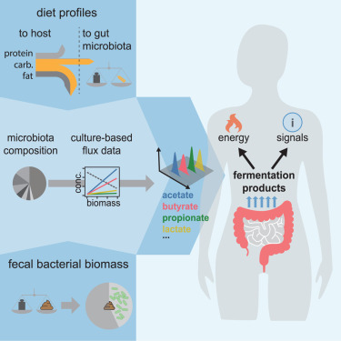
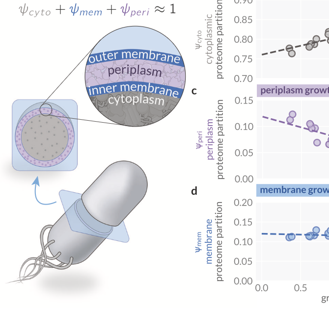
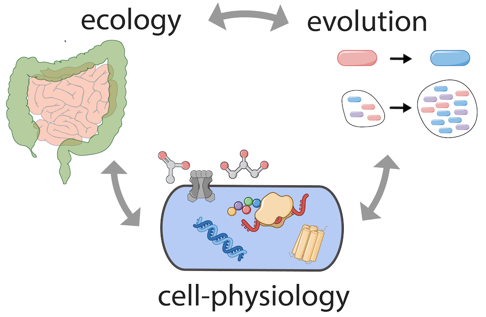

The human gut microbiota
The human gut microbiota is a central focus of the lab. We connect fundamental principles of bacterial physiology with intestinal physiology, diet, and host metabolism to quantify the exchange of chemical fluxes between the microbiota and the human host. Towards a mechanistic understanding, we tightly integrate in-vitro experimentation with mathematical modeling and the analysis of food intake and digestion. Building on these quantitative foundations, we investigate how the microbiome's metabolic activities vary across individuals and health conditions, aiming to reveal the mechanistic role of the microbiome in disease development and progression.
Quantifying the varying harvest of fermentation products from the human gut microbiota (2025)
Diurnal Variations in Digestion and Flow Drive Microbial Dynamics in the Gut (2025)
Changing flows balance nutrient absorption and bacterial growth along the gut (2022)

Microbial cell physiology
How do microbial cells coordinate thousands of enzymes and molecular processes to grow and replicate? We seek the essential physiological principles governing microbial growth by combining controlled culturing experiments across conditions with omics approaches, including proteomics and transcriptomics, and mathematical modeling. To generate biological insights into growth, we use low-dimensional modeling approaches building on and expanding the idea of resource allocation. We work primarily with E. coli, but increasingly also include other microbes across biological domains.
Maintenance of cytoplasmic and membrane densities shapes cellular geometry in Escherichia coli (2025)
An optimal regulation of fluxes dictates microbial growth in and out of steady-state (2023)
Suboptimal resource allocation during changing environments constrains bacterial response and growth recovery (2021)

Physiology, ecology, and evolution
Incorporating ecological and evolutionary considerations with our physiological studies, we explore how fundamental cell-physiological constraints shape adaptation to specific environments and habitats. For example, systematic omics studies have revealed that large fractions of the proteome account for proteins not immediately required for growth in probed conditions. We aim to understand the role of these conditionally unutilized proteins, how they shape growth and how they reflect ecological adaptation. Are they part of an anticipatory adaptation strategy, poised for rapid deployment when conditions shift? How does the expression of these proteins reflect the ecological niche of a species, and what does this tell us about the physiological identity of a species and its evolutionary history?